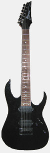
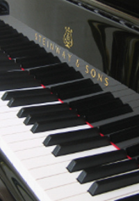

Home
Home Features
Features

Welcome To Music Monitor
Music Monitor is an application designed to track specific music artists and genres through social media and news. All you do is create a simple list of your favorite artists and genres. Music Monitor then goes out and searches places like Twitter and Google News for any recent mention of the items on your list. What this allows you to do is keep up with the latest concerts or events of interest to you as well as track the online popularity of your preferred music.
Whatever your music taste, whether it be classic rock or classical piano, Music Monitor can help you keep tabs on it.
